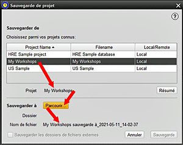

Cet écran vous permet de sauvegarder un projet HRE existant, que le projet soit actellement ouvert dans HRE ou non. Vous pouvez sélectionner la destination du fichier de sauvegarde et choisir de sauvegarder ou non également les dossiers externes faisant partie du projet. L'emplacement de sauvegarde par défault peut être défini dans Outils > Paramètres > Utilisateur > Emplacements des fichiers. 1. Sélectionnez PROJET >> SAUVGARDER LE PROJET et mettez en surbrillance le projet souhaité dans la liste présentée. 2. HRE affichera maintenant le nom du fichier qui sera appliqué à la sauvegarde, qui est le nom du projet avec l'heure et la date actuelles ajoutées. À ce stade, il existe une option pour afficher un RÉSUMÉ du projet sélectionné. 3. Cliquez sur PARCOURIR pour localiser le dossier dans leqel la sauvegarde doit être stockée. Bien que le dossier par défault s'affice (tel que défini dans les paramètres HRE pour les emplacements de fichiers), vous pouvez parcourir pour sélectionner un autre emplacement. Le fichier recevra automatiquement le suffix du ficher de sauvegarde compacté hrez. Une fois que le dossier de l'emplacement souhaité est dans la fenêtre, appuyez sur ENTREZ pour le sélectionner. 4. Vous pouvez maintenet choisir de sauvegarder également les dossiers de fichiers externes (images, documents, fichiers audio, vidéos, etc.) associés à ce projet en cochant la case de sélection. Cela ouvrira une nouvelle fenêtre qui vous permet de sélectionner un ou plusieurs dossiers à sauvegarder et de spécifier où vous voulez les enregistrer, qui peut être différent de l'emplacement de saugarde du projet. Le nom du fichier de sauvegarde contiendra le nom du dossier d'origine et sera un type de fichier zip standard. 5. Maintenant, cliquez sur SAUVEGARDER pour démarrer le processus. Si le projet nominé est actuellement ouvert dans HRE, il sera d'abord fermé, puis la sauvegarde commencera. La base de données du projet sera premièrement sauvegardée suivi des dossiers de fichiers externes (si vous en avez spécifié). 6. Également vous pouvez sélectionner ANNULER si la sauvegarde n'est plus nécessaire.. |
|
Sujets Relatifs |